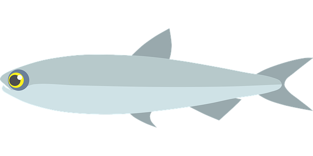

<div class="ot-card-container">
  <div class="ot-card card-middle-blue ot-card-double">
    
  </div>

  <div class="ot-card ot-card-yelow">

  </div>

  <div class="ot-card card-orange">
    <svg class="ot-material-icons" xmlns="http://www.w3.org/2000/svg" width="24" height="24" viewBox="0 0 24 24"><path d="M13.5.67s.74 2.65.74 4.8c0 2.06-1.35 3.73-3.41 3.73-2.07 0-3.63-1.67-3.63-3.73l.03-.36C5.21 7.51 4 10.62 4 14c0 4.42 3.58 8 8 8s8-3.58 8-8C20 8.61 17.41 3.8 13.5.67zM11.71 19c-1.78 0-3.22-1.4-3.22-3.14 0-1.62 1.05-2.76 2.81-3.12 1.77-.36 3.6-1.21 4.62-2.58.39 1.29.59 2.65.59 4.04 0 2.65-2.15 4.8-4.8 4.8z"/></svg>

    <span>Angular Blog</span>

    <svg class="ot-material-icons" xmlns="http://www.w3.org/2000/svg" width="24" height="24" viewBox="0 0 24 24"><path d="M10 6L8.59 7.41 13.17 12l-4.58 4.59L10 18l6-6z"/></svg>
  </div>
  <div class="ot-card ot-card-double ot-card-double-image">

    <iframe width="600" height="315" src="https://www.youtube.com/embed/d91UlKv3M0I?autoplay=1"
            frameborder="0" allow="accelerometer; autoplay; clipboard-write; encrypted-media; gyroscope; picture-in-picture"
            allowfullscreen></iframe>
  </div>
</div>
